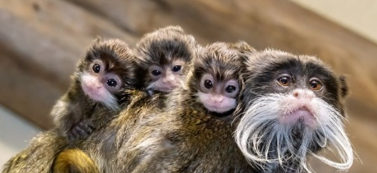
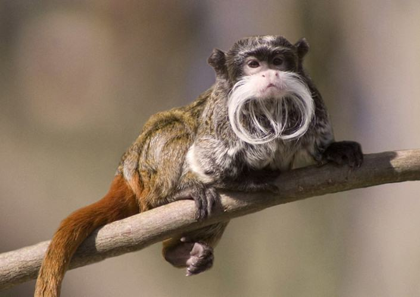

A principal característica do Sagui-imperador é, sem dúvida, o bigode avantajado e longo, que é a marca principal desse primata, podendo chegar até o comprimento de seus ombros. Ainda nas principais características tem se a cauda também longa.
Nas fêmeas e jovens, o bigode é um pouco mais curto.
É de porte pequeno, onde as fêmeas são pouco maiores que os machos


Cor do bigode predominantemente branca.
São macacos que apresentam colorações, em geral, escuras, mas a pelagem é bastante mesclada, predominantemente cinzenta, com manchas amarelas no peito. As mãos e pés são pretos e a cauda é castanha.
Mede de 28,5 a 60,5 cm e pode pesar até 595 gramas.
Apresenta a pelagem da face negra, formando uma “máscara” ao redor dos olhos, e um bigode com longos pelos brancos voltados para baixo.
Habitam uma área de cerca de 30 a 40 hectares.
Os membros do grupo são classificados de acordo com o sexo e idade, de tal modo que a fêmea mais velha possui o estatuto social mais elevado, sendo a dominante.
As fêmeas subordinadas são frequentemente "reprimidas sexualmente" e impedidas de se reproduzirem pela fêmea dominante, no entanto podem cuidar das suas crias, e assim ganham experiência.
O período de gestação dura entre 140 a 145 dias, após os quais nascem uma a duas crias, raramente três.
O progenitor normalmente auxilia com o nascimento destas, recebendo-as no final do parto e limpando-as.
As crias são completamente indefesas e possuem pêlo curto.
A progenitora alimenta-as em cada 2 a 3 horas e após este processo elas retornam para o progenitor.
Os filhotes permanecem no dorso dos progenitores durante 6 a 7 semanas. Todos os membros do grupo cuidam deles, incluindo os machos.
Todos os membros do grupo cuidam deles, incluindo os machos.
ℂ𝕌ℝ𝕀𝕆𝕊𝕀𝔻𝔸𝔻𝔼𝕊
Também é conhecido popularmente como Sagui-Imperador, por habitar regiões de outros países sul-americanos.
É uma das espécies de saguis com a cauda mais comprida, podendo chegar ao dobro da extensão de seu corpo.
Sua principal atividade social é a catação, que além de pedaços de pele morta e parasitas, também serve como uma forma de estabelecer laços afetivos.
É um primata silenciado, como muitos dos saguis. Emitem sons apenas para se comunicar com macacos de seus grupos ou alertar presença de predadores e perigos.
Tem um olfato aguçado, podem até se comunicar entre eles por esse sentido.
São tímidos sociáveis.
Uma doença primária de humanos que pode infectar animais é chamada de zooantroponose, mas o contrário também pode acontecer. Os saguis, se infectados, podem ser transmissores da raiva